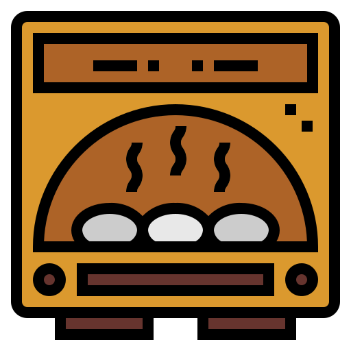

Dale seguimiento a tu proyecto, siempre se puede mejorar
Una vez que ha concluido el proyecto, se debe
realizar una fase de autocontrol con el fin de aprender a
evaluar mejor la calidad del proyecto.
Para esta fase de
autocontrol se suelen utilizar también cuestionarios o test
programados similares a los que se suelen utilizar para los
exámenes.
Retomemos los ejemplos anteriormente mencionados
¿Cómo hago la fase de control de mi viaje?
Cambiar de hotel si no me gustó

Debido a tal vez una mala experiencia en el hotel que me estoy hospedando lo puedo cambiar
Buscar nuevos lugares para visitar
Si es necesario se pueden elegir nuevos lugares para visitar
Cambiar de cómida

Si no me gustó la comida tradicional del país puedo cambiarla a comida rápida
¿Cómo hago la fase de control sobre mi lasaña?
Revisar el ensamblaje de la lasaña

Me aseguro que la lasaña esté bien ensamblada, si no es así lo corrijo
Vericar le horno
Verifiqué que el horno estuviera a la temperatura correcta para asegurar una cocción uniforme.
Estar consciente del tiempo de cocción

Controlé el tiempo de cocción para evitar que la lasaña se queme o cocine de manera desigual, ajustando si es necesario.